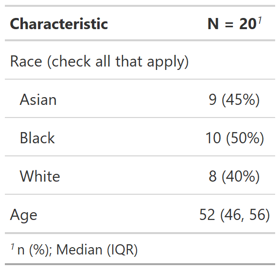

Some data are inherently grouped, and should be reported together. For example, one person likely belongs to multiple racial groups and the results of these tabulations belong in a grouped portion of a summary table.
Grouped variables are all indented together. The label row is a single indent, and the other rows are double indented.
add_variable_grouping(x, ...)a gtsummary table
named arguments. The name is the group label that will be inserted into the table. The values are character names of variables that will be grouped
a gtsummary table
While the returned table is the same class as the input, it does not follow the structure expected in other gtsummary functions that accept these objects: errors may occur.
Example 1

set.seed(11234)
add_variable_grouping_ex1 <-
data.frame(
race_asian = sample(c(TRUE, FALSE), 20, replace = TRUE),
race_black = sample(c(TRUE, FALSE), 20, replace = TRUE),
race_white = sample(c(TRUE, FALSE), 20, replace = TRUE),
age = rnorm(20, mean = 50, sd = 10)
) %>%
gtsummary::tbl_summary(
label = list(race_asian = "Asian",
race_black = "Black",
race_white = "White",
age = "Age")
) %>%
add_variable_grouping(
"Race (check all that apply)" = c("race_asian", "race_black", "race_white")
)